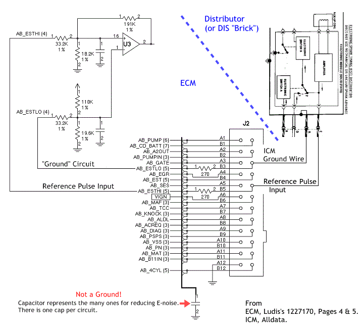

Go Home
Site Map
Go Home
Site Map
ICM/PIM Grounding "Myth"
Most everyone will tell you that DIS and HEI systems uses a wire that goes to the ECM/PCM is a Ground for use by the ICM/PIM, like a backup ground for ICM use, but is it? Sadly No, the ground is really a Ground Reference, an Input to the ECM. Many Documents, like Service Manuals, just label that circuit as a Ground to avoid confusion with the (spark) reference signal.
This "ground" is at the ICM end of the connection and not the ECM end. At ECM side of the connection the pin goes to 270 ohm resistor as first thing it hits. It then goes to more resistors and capacitor to "buffer" the signal.
So if the main ground has a bad connection then you have real problems and can kill the ICM. A loose ground wire can cause DTC 42 Electronic Spark Timing.
Need proof? Go to Ludis's Home Page and follow schematics for ECM you're interesting in.
This example might help... I make it from 2 Ludis's 1227170 Schematics with an ICM connected. Every GM OBD1 uses this setup.
